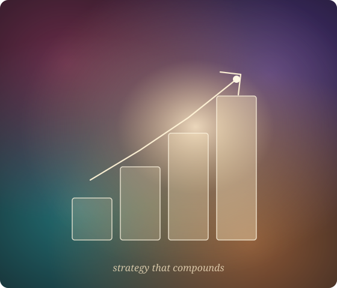

خدماتِ ما فهرستی از تاکتیکهای جدا از هم نیست — یک مسیرِ صعودی است. هر همکاری ریسکِ شما را کم و کار را عمیقتر میکند، از نخستین جلسهٔ رایگان تا یک مشارکتِ مستمر. هر کدام با استراتژی آغاز میشود.

یک همکاریِ استراتژیکِ ششبخشیِ کامل، تولیدشده از یک فرم و پالایششده توسط استراتژیست — سریعترین راه به یک استراتژیِ نوشتهشده و قابلِ اجرا.
مشاهدهٔ بلوپرینت →یک شریکِ استراتژیکِ ارشد در دسترس. وضوح در جایگاه و اولویتها، و نگاهِ دومِ آرام که رشد را در مسیر نگه میدارد — جلسهای یا ماهانه.
رزرو جلسه →چه کسی هستید، برای چه میایستید و چگونه صدا میدهید — جایگاهی که بازار به یاد میسپارد و رقبا نمیتوانند کپی کنند. بنیانِ ماندگارِ زیرِ هر کمپین.
رزرو جلسه →محتوای استراتژیمحور با صدای شما — شبکههای اجتماعی، مقاله، ایمیل و اسکریپت. ستونها و ریتمی که به اعتماد و تقاضای ورودی میانجامد.
رزرو جلسه →ماشینِ خاموش — فرم، تولید، تحویل، CRM — که استراتژیِ شما را مقابلِ هر مشتری قرار میدهد، قابلاتکا و هماهنگ با برند. استراتژی، عملیاتیشده.
رزرو جلسه →برای کسبوکارهایی که یک شریکِ استراتژیکِ بازاریابیِ بلندمدت میخواهند — استراتژی، بازبینی و اجرای مستمر بر اساسِ یک برنامهٔ زنده.
رزرو جلسه →بیشترِ مشتریان کوچک آغاز میکنند و با ساختهشدنِ اعتماد عمیقتر میروند. هر گام بهتنهایی ارزشمند است — و طبیعی به گامِ بعد میرسد.
یک استراتژیِ نوشتهشدهٔ کامل در چند دقیقه — روشنترین معرفیِ ممکن از طرزِ فکرِ ما.
بلوپرینت را با هم مرور میکنیم، تفکر را محک میزنیم و نخستین گامها را تعیین میکنیم.
هدایتِ عملیِ استراتژیک برای بهکار انداختنِ برنامه — جایگاه، برند و محتوا.
ماشینی میسازیم که استراتژیِ شما را پیوسته و در مقیاس تحویل میدهد.
یک شریکِ بلندمدت در رشدِ شما، بر اساسِ یک برنامهٔ زنده.
یک فرم یا گفتوگوی متمرکز، آنچه مهم است را ثبت میکند — کسبوکار، مشتری، هدف.
آن را به یک برنامهٔ روشن تبدیل میکنیم، بر پایهٔ پاسخهای شما — نه یک قالب.
با هم مرورش میکنیم و بر اولویتهایی که همین حالا مهماند توافق میکنیم.
اجرا میکنیم — یا برنامهای بهقدرِ کافی روشن به شما میدهیم که خودتان اجرا کنید. انتخاب با شماست.
هر همکاری در سطحِ کیفیتِ نمونهٔ بلوپرینت و نمونهکارهای منتشرشدهٔ ما نگه داشته میشود.
یک جلسهٔ استراتژیِ رایگان رزرو کنید و ما شما را به همکاریِ درست راهنمایی میکنیم — بدون فشار، بدون تعهد.